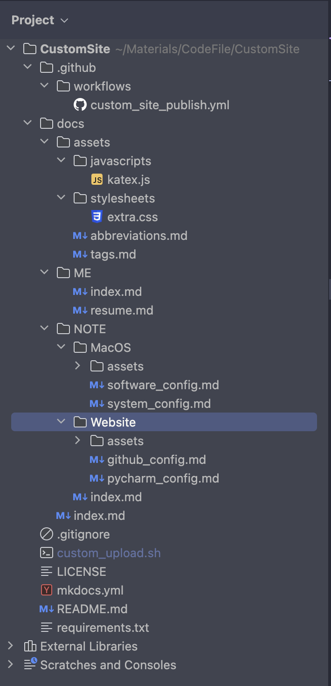

Pycharm中的配置👻
整体结构👻

脚本文件的配置👻
文件路径：./custom_upload.sh
-
首先创建脚本文件:
Bashtouch ./custom_upload.sh ## 方法一：使用sh运行脚本 sh custom_upload.sh ## 方法二：增加可执行权限 （个人使用方法二） chmod u+x ./custom_upload.sh # 直接使用./custom_upload.sh运行脚本 ./custom_upload.sh -
编辑脚本文件内容：
-
创建忽略文件，将忽略文件的配置复制到里面
Bashtouch .gitignore -
创建依赖文件，将依赖文件的配置复制到里面
Bashtouch requirements.txt -
创建Mkdocs文件，将Mkdocs文件的配置复制到里面
Bash# 一定要先创建完依赖文件，才能安装mkdocs-material的包 pip3 install -r requirements.txt # 初始化mkdocs项目（要先安装完对应的包） mkdocs new . -
创建工作流文件，将工作流文件的配置复制到里面
Bash# 创建工作流文件所在目录 mkdir -p .github/workflows touch .github/workflows/custom_site_publish.yml -
创建附加文件
-
创建js文件，将js文件的配置复制到里面
Bash# 创建js文件所在目录 mkdir -p docs/assets/javascripts touch docs/assets/javascripts/katex.js -
创建css文件，将css文件的配置复制到里面
Bash# 创建css文件所在目录 mkdir -p docs/assets/stylesheets touch docs/assets/stylesheets/extra.css -
创建缩略词文件，将缩略词文件的配置复制到里面
Bashtouch docs/assets/abbreviations.md -
创建标签文件，将标签文件的配置复制到里面
Bashtouch docs/assets/tags.md
-
-
初始化仓库
Bash# 初始化本地仓库 git init # 添加全部文件到暂存区 git add . # 提交暂存区内容到本地仓库 git commit -m "init" # 添加远程仓库 git remote add origin https://github.com/wangteqi/wangteqi.github.io.git # 从远程更新仓库的本地版本 git pull --rebase origin main # 推送到远程仓库 (第一次推送时需要输入账号：邮箱，密码：令牌) git push -u origin main -
Git提交修改的代码（最终只需这一步）
Bash# 查看文件当前状态 git status # 添加全部文件到暂存区 git add . # 提交暂存区内容到本地仓库 git commit -m "init" # 从远程更新仓库的本地版本 git pull --rebase origin main # 推送到远程仓库 git push -u origin main
-
-
完整的脚本文件内容
Bash# Step1: 创建忽略文件和依赖文件 touch .gitignore touch requirements.txt # Step2: 安装mkdocs-material，并初始化Mkdocs项目 pip install -r requirements.txt mkdocs new . # Step3: 创建相关文件（工作流文件，附加文件） mkdir -p .github/workflows touch .github/workflows/custom_site_publish.yml mkdir -p docs/assets/javascripts touch docs/assets/javascripts/katex.js mkdir -p docs/assets/stylesheets touch docs/assets/stylesheets/extra.css touch docs/assets/abbreviations.md touch docs/assets/tags.md # Step4：初始化仓库 git init git add . git commit -m "init" git remote add origin https://github.com/wangteqi/wangteqi.github.io.git git pull --rebase origin main git push -u origin main # Step5：提交修改的代码（后续提交只需要这一步骤，其余步骤内容注释掉） git status echo "-----------------------------------------------------" git add . git commit -m "init" git pull --rebase origin main git push -u origin main
忽略文件的配置👻
-
.gitignore规则不生效 .gitignore只能忽略那些Untracked的文件，如果某些文件已经被纳入了版本管理中，则修改.gitignore是无效的。
解决方法：删除本地缓存（改变成Untrack状态）
Bashgit rm -r --cached . -
文件路径：./.gitignore
-
文件内容
Text Only# macos文件 .DS_Store # pycharm文件 .idea/ # 使用mkdocs build产生的网站文件 site/ # 脚本文件 custom_upload.sh
依赖文件的配置👻
-
需要用到的包名，如mkdocs-material
-
文件路径：./requirements.txt
-
文件内容
Text Onlymkdocs-material
Mkdocs文件的配置👻
-
配置Material主题
-
相关资料
-
文件路径: ./mkdocs.yml
-
文件内容
YAML# 网站名字 site_name: 王特起的个人网站 # 网站地址 site_url: https://wangteqi.github.io # 网站作者 site_author: 王特起 # 网站描述 site_description: 王特起的个人网站说明： （标签修改需要更新2处内容icon里的tag, extra里的tags）， （添加文档需要更新nav中的内容）， （添加文档状态图标需要更新extra中status的内容）。 参考文档： （https://squidfunk.github.io/mkdocs-material/）， （https://facelessuser.github.io/pymdown-extensions/） # GitHub 仓库 repo_name: wangteqi.github.io # 仓库名称 repo_url: https://github.com/wangteqi/wangteqi.github.io # 仓库url地址 edit_uri: edit/main/docs # 跳转至GitHub修改Markdown源文件 # 左下角的版权声明 copyright: Copyright © 2024 ~ now | 🫥 王特起 (QiQ_iQi) ## 主题配置 theme: # 主题名称 name: material # 启用material主题 # 更改主题的整体外观 palette: # 跟随系统主题 - media: "(prefers-color-scheme)" toggle: icon: fontawesome/solid/star-half-stroke name: System preference # 浅色主题 - media: "(prefers-color-scheme: light)" scheme: default #浅深主题 primary: deep purple #主题色, 标题、侧边栏、文本链接 accent: deep orange #强调色, 悬停的链接、按钮和滚动条 toggle: icon: material/weather-sunny # 组件图标 name: Light # 组件名称 # 深色主题 - media: "(prefers-color-scheme: dark)" scheme: slate primary: blue grey accent: deep orange toggle: icon: material/weather-night name: Dark # 字体设置 font: text: Monaco code: Monaco # 语言设置 language: 'en' #网页的语言 # 图标 (搜索图标的链接: https://squidfunk.github.io/mkdocs-material/reference/icons-emojis/#search) icon: logo: fontawesome/brands/github-alt # 网页的图标 repo: fontawesome/brands/github # github仓库的图标 tag: # 标签的图标（需要更新tag） me_icon: simple/aboutdotme # 功能 features: # 导航的设置 - navigation.tracking # URL锚点跟踪 - navigation.tabs # 显示顶层导航栏标签页 - navigation.tabs.sticky # 顶层导航栏标签页始终可见 - navigation.expand # 展开左侧导航栏 - navigation.indexes # 提供标签页的概述页面 - toc.follow # 目录跟随 - navigation.top # 返回顶部，在上滑时出现 - navigation.footer # 底部导航栏 # 网站搜索的设置 - search.suggest # 搜索输入一些字母时推荐补全整个单词 - search.highlight # 搜索出的文章关键词加入高亮 # 代码的设置 # - content.action.view # 查看源码 # - content.action.edit # 编辑源码 - content.code.copy # 复制代码 - content.code.annotate # 代码悬浮注释 # 内容选项卡设置 - content.tabs.link # 同步联结并联的内容选项卡 # 链接注释 - content.tooltips # 设置链接名称 ## markdown扩展 markdown_extensions: # Python Markdown包 - abbr # 缩略词 *[HTML]: Hyper Text Markup Language - admonition # 突出显示提示框 !!! note - attr_list # 属性列表（注释，按钮，颜色......） - def_list # 自定义列表 - footnotes # 脚注 - md_in_html # 允许在html中使用markdown语法 - toc: # 目录 title: 目录 # 网页语言为英语时设置（非必须） permalink: 👻 # 永久链接，固定标题位置为当前链接位置 permalink_title: Permanent link # 永久链接悬停标题 # 使链接URL更易读 slugify: !!python/object/apply:pymdownx.slugs.slugify kwds: case: lower - tables # 表格 # Python Markdown Extension包 - pymdownx.arithmatex: # 数学公式 generic: true - pymdownx.betterem: # 允许嵌套使用粗体斜体 - pymdownx.caret # 符号 ^,^^ - pymdownx.tilde # 符号 ~,~~ - pymdownx.mark # 符号 == - pymdownx.details # 折叠突出显示提示框 ??? note - pymdownx.emoji: # 表情 :smile: emoji_index: !!python/name:material.extensions.emoji.twemoji emoji_generator: !!python/name:material.extensions.emoji.to_svg - pymdownx.superfences: # 允许代码和内容块之间任意嵌套 - pymdownx.highlight: # 在嵌套的基础上代码高亮 pygments_lang_class: true # 个性化不同语言的高亮（非必须） auto_title: true # 添加标题 linenums: true # 显示行号 或指定起始行号,高亮某些行 linenums_style: pymdownx-inline # 行号样式 - pymdownx.inlinehilite # 行内代码高亮 - pymdownx.keys # 键盘键 ++ctrl+alt+del++ - pymdownx.smartsymbols # 智能符号 (c) - pymdownx.snippets: # 将任意文件中的内容嵌入到文档中（主目录是CustomSite） auto_append: - docs/assets/abbreviations.md # 缩略词 - pymdownx.tabbed: # 并列内容选项卡 alternate_style: true # 使选项卡的跳转链接更易读 slugify: !!python/object/apply:pymdownx.slugs.slugify kwds: case: lower - pymdownx.tasklist: # 复选列表 custom_checkbox: true ## 自定义javascript extra_javascript: # 数学公式 - assets/javascripts/katex.js - https://unpkg.com/katex@0/dist/katex.min.js - https://unpkg.com/katex@0/dist/contrib/auto-render.min.js ## 自定义css extra_css: # 数学公式 - https://unpkg.com/katex@0/dist/katex.min.css # 自定义字体...样式 - assets/stylesheets/extra.css ## 插件 plugins: # 搜索功能 - search: lang: - zh - en - ja separator: '[\s\u200b\-,:!=\[\]()"/]+|(?!\b)(?=[A-Z][a-z])|\.(?!\d)|&[lg]t;' # 标签功能 - tags: tags_file: assets/tags.md ## 额外配置项 extra: # 社交账号 social: - name: Github | wangteqi icon: fontawesome/brands/github link: https://github.com/wangteqi - name: QQ | 1591700776 icon: fontawesome/brands/qq link: https://wangteqi.github.io/主页/ - name: Bilibili | wangteqi icon: fontawesome/brands/bilibili link: https://space.bilibili.com/70766963 # 文档状态 （需要更新status） status: new: Recently Add news: Recently Add deprecated: Removed # 标签 （需要更新tags） tags: 关于我: me_icon ## 导航栏 （需要更新nav） not_in_nav: | # 不在导航栏中的文件 index.md assets/abbreviations.md nav: # 在导航栏中的文件 - 我: # 使用index.md说明该标签页的概述 - ME/index.md - 个人简介: ME/resume.md - 笔记: - NOTE/index.md - MacOS设置: - 系统偏好设置: NOTE/MacOS/system_config.md - 常用软件设置: NOTE/MacOS/software_config.md - 个人网站搭建: - Github中的配置: NOTE/Website/github_config.md - Pycharm中的配置: NOTE/Website/pycharm_config.md - 标签: - assets/tags.md
工作流文件的配置👻
-
相关资料
-
文件路径：./.github/workflows/custom_site_publish.yml
-
文件内容
YAML# 定义工作流名称 name: custom-site-publish # 触发条件 on: push: # 这个工作流会在每次向仓库main分支推送代码时触发 branches: - main ## 构建工作流中的任务 jobs: # 任务名称 deploy: # 指定环境 environment: mkdocs-deploy # 指定了运行该任务的虚拟环境是最新版本的Ubuntu runs-on: ubuntu-latest # 执行步骤 steps: ## 推送到Github上 # 检出代码到运行工作流的虚拟环境中 - name: Checkout repository # 动作名称 uses: actions/checkout@v4 # 动作 # 配置Git凭证，由GitHub Actions Bot完成后续的提交操作 - name: Configure Git Credentials run: | git config user.name "github-actions[bot]" git config user.email "41898282+github-actions[bot]@users.noreply.github.com" # 自动设置python环境 - name: Setup Python uses: actions/setup-python@v5 with: # 指定版本参数 python-version: 3.x ## 使用缓存更快的下载相关包 # 缓存文件 - name: Cache modules # 使用缓存action uses: actions/cache@v4 with: # 需要缓存的文件的路径 path: ~/.cache/pip # 对缓存的文件指定的唯一表示 key: ${{ runner.os }}-pip-${{ hashFiles('**/requirements.txt') }} # 当 key 没有命中缓存时，用于恢复缓存key值的有序列表 restore-keys: | ${{ runner.os }}-pip- ## 安装相关依赖包 # 使用包管理工具pip安装 mkdocs-material - name: Install dependencies run: pip install -r requirements.txt ## 部署网站 # 使用 mkdocs-material 构建网站并部署到 gh-pages 分支 - name: Deploy to gh-pages run: mkdocs gh-deploy --force
主页index文件的配置👻
Markdown
# 👋
你好
这里是王特起的主页 :simple-homepage:
（待完善）
## 板块
- [关于我](ME/index.md)：关于我的一些资料
- [内容标签](assets/tags.md)：标签
## 功能
1. 基础配置
- [ ] MacOS
- [ ] Typora
- [ ] Royal tsx
附加文件的配置👻
js文件的配置👻
-
文件路径：./docs/assets/javascripts/katex.js
-
文件内容
JavaScript// 数学公式katex document$.subscribe(({ body }) => { renderMathInElement(body, { delimiters: [ { left: "$$", right: "$$", display: true }, { left: "$", right: "$", display: false }, { left: "\\(", right: "\\)", display: false }, { left: "\\[", right: "\\]", display: true } ], }) })
css文件的配置👻
-
自定义样式，如自定义文档状态图标
-
文件路径：./docs/assets/stylesheets/extra.css
-
文件内容
CSS/*自定义样式*/ :root { /*文档状态的图标*/ --md-status--news: url('data:image/svg+xml;charset=utf-8,<svg xmlns="http://www.w3.org/2000/svg" viewBox="0 0 24 24"><path d="M20 4c1.11 0 2 .89 2 2v12c0 1.11-.89 2-2 2H4c-1.11 0-2-.89-2-2V6c0-1.11.89-2 2-2h16M8.5 15V9H7.25v3.5L4.75 9H3.5v6h1.25v-3.5L7.3 15h1.2m5-4.74V9h-4v6h4v-1.25H11v-1.11h2.5v-1.26H11v-1.12h2.5m7 3.74V9h-1.25v4.5h-1.12V10h-1.25v3.5h-1.13V9H14.5v5a1 1 0 0 0 1 1h4a1 1 0 0 0 1-1Z"/></svg>'); } .md-status--news::after { mask-image: var(--md-status--news); -webkit-mask-image: var(--md-status--news); } /* 无序列表样式 */ article ul { list-style-type: disc !important; } article ul ul { list-style-type: circle !important; } article ul ul ul { list-style-type: circle !important; } article ul ul ul ul { list-style-type: circle !important; }
缩略词文件的配置👻
-
文件路径：./docs/assets/abbreviations.md
-
文件内容
Markdown*[HTML]: Hyper Text Markup Language *[W3C]: World Wide Web Consortium
标签文件的配置👻
-
文件路径：./docs/assets/tags.md
-
文件内容
Markdown# 标签 相关标签列表： <!-- material/tags -->